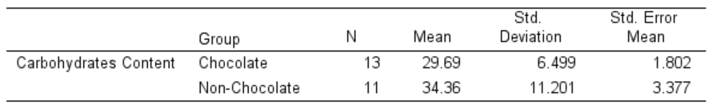

3 Estimation
Learning Objectives:
- Describe and construct the interval estimation for the mean of the population parameter (both σ known and σ unknown) for large and small sample size.
- Describe and construct the interval estimation for the difference between two means (both σ known and σ unknown) for independent sample.
- Describe and construct the interval estimation for the difference between two means (both σ known and σ unknown) for dependent sample.
3.1 Introduction
Estimation is the process in which a numerical value collected from a sample is assigned to a population parameter. The value(s) that is assigned to a population parameter based on the sample statistic is called an estimation while the sample statistic used to estimate population parameter is called an estimator. There are two (2) types of estimates that will be discussed in this chapter name as point estimate and interval estimate.
3.2 Point Estimation
A point estimate is a specific numerical value estimate of a parameter.
The value calculated from a sample mean, \(\bar{x}\) is the best point estimate of the population mean, \(\mu\). In estimation, the calculation margin of error is calculated based on point estimation.
3.3 Interval Estimation
- An interval estimate of a parameter is an interval or a range of values used to estimate the parameter based on observations from one sample. There are two (2) values in the interval estimate: lower limit and upper limit.
- The interval constructed around the point estimate, but the estimate may or may not contain the value of the parameter being estimated.
- Each interval constructed also regards a given confidence level and it is called a confidence interval.
- A confidence interval is a specific interval estimate of a parameter determined by using data obtained from a sample and by using the specific confidence level of the estimate.
- The confidence level of an interval estimate of a parameter is the probability that the interval estimate will contain the parameter. It is denoted by (1-)100%. The is called a significance level (probability that the parameter is not within the interval).
- In constructing a confidence interval, researchers can choose any value for confidence level for example 90%, 95% and 99%.
3.3.1 Interval Estimate for a Mean (when σ is Known/Unknown)
3.3.1.1 CASE 1: Confidence Interval of the Mean for σ is Known and Large Sample Size (n ≥ 30)
\[ \bar{X} – Z_{\frac{\alpha}{2}}\left(\frac{\sigma}{\sqrt{n}}\right) \lt \mu \lt \bar{X} + Z_{\frac{\alpha}{2}}\left(\frac{\sigma}{\sqrt{n}}\right)\ \ \ \ \ or\ \ \ \ \ \ \bar{X} \pm Z_{\frac{\alpha}{2}}\left(\frac{\sigma}{\sqrt{n}}\right) \]
For a 90% confidence interval: \(z_{α/2}=1.65\)
For a 95% confidence interval: \(z_{α/2}=1.96\)
For a 99% confidence interval: \(z_{α/2}=2.58\)
Note: To determine the value of z, please refer to Table 3 or Table 4 from Statistical Tables.
Example 3.1
95% Confidence Interval of the Mean
Refer Table 3 or Table 4 to determine the value of z.
Example 3.2
A researcher wishes to estimate the number of days it takes an automobile dealer to sell Aza Aveo. A sample of 50 cars had a mean time on the dealer’s lot of 54 days. Assume the population standard deviation to be 6.0 days. Find the best point estimate of the population mean and the 95% confidence interval of the population mean.
Answer:
The best point estimate of the mean (\(\mu\)) is 54 days.
Given:
\(\bar{X} = 54,\ \sigma = 6.0,\ n = 50, 95\%\ confident\ level\ \rightarrow z = 1.96\)
95% confidence interval of the population mean:
\[ \begin{aligned} \bar{X} – Z_{\frac{\alpha}{2}}\left(\frac{\sigma}{\sqrt{n}}\right) &\lt \mu \lt \bar{X} + Z_{\frac{\alpha}{2}}\left(\frac{\sigma}{\sqrt{n}}\right) \\ 54 – 1.96\left(\frac{6.0}{\sqrt{50}}\right) &\lt \mu \lt 54 + 1.96\left(\frac{6.0}{\sqrt{50}}\right) \\ 54 - 1.663 &\lt \mu \lt 54 + 1.663 \\ 52.337 &\lt \mu \lt 55.663 \end{aligned} \]
or
\[ \begin{aligned} \bar{X} &\pm Z_{\frac{\alpha}{2}}\left(\frac{\sigma}{\sqrt{n}}\right) \\ 54 &\pm 1.96\left(\frac{6.0}{\sqrt{50}}\right)\\ 54 &\pm 1.663 \\ (52.337&,\ 55.663) \end{aligned} \]
One can say with 95% confidence that the interval between 52 and 56 days contains the population mean, based on a sample of 50 automobiles.
Example 3.3
A large department store found that it averages 362 customers per hour. Assume that the standard deviation is 29.6 and a random sample of 40 hours was used to determine the average. Find the 99% confidence interval of the population mean.
Answer:
\[ \begin{aligned} \bar{X} – Z_{\frac{\alpha}{2}}\left(\frac{\sigma}{\sqrt{n}}\right) &\lt \mu \lt \bar{X} + Z_{\frac{\alpha}{2}}\left(\frac{\sigma}{\sqrt{n}}\right) \\ 362 – 2.58\left(\frac{29.6}{\sqrt{40}}\right) &\lt \mu \lt 362 + 2.58\left(\frac{29.6}{\sqrt{40}}\right) \\ 362 - 12.1 &\lt \mu \lt 362 + 12.1 \\ 349.9 &\lt \mu \lt 374.1 \end{aligned} \]
or
\[ \begin{aligned} \bar{X} &\pm Z_{\frac{\alpha}{2}}\left(\frac{\sigma}{\sqrt{n}}\right) \\ 362 &\pm 2.58\left(\frac{29.6}{\sqrt{40}}\right)\\ 362 &\pm 12.1 \\ (349.9&,\ 374.1) \end{aligned} \]
Hence, one can be 99% confident that the mean number of customers that the store averages is between 350 and 374 customers per hour (rounding values).
3.3.1.2 CASE 2: Confidence Interval of the Mean for \(\sigma\) is Unknown and Large Sample Size (\(n \ge 30\))
\[ \bar{X} – Z_{\frac{\alpha}{2}}\left(\frac{s}{\sqrt{n}}\right) \lt \mu \lt \bar{X} + Z_{\frac{\alpha}{2}}\left(\frac{s}{\sqrt{n}}\right)\ \ \ \ \ or\ \ \ \ \ \ \bar{X} \pm Z_{\frac{\alpha}{2}}\left(\frac{s}{\sqrt{n}}\right) \]
Example 3.4
The following data represent a sample of the assets (in millions of ringgit Malaysia) of 30 credit banks in Malaysia. Find the 90% confidence interval of the mean. Given standard deviation for the following data is 14.405.
| 12.23 | 16.56 | 4.39 | 2.89 | 1.24 | 2.17 | 13.19 | 9.16 | 1.42 | 73.25 |
| 1.91 | 14.64 | 11.59 | 6.69 | 1.06 | 8.74 | 3.17 | 18.13 | 7.92 | 4.78 |
| 16.85 | 40.22 | 2.42 | 21.58 | 5.01 | 1.47 | 12.24 | 2.27 | 12.77 | 2.76 |
\[ \begin{aligned} \bar{X} – Z_{\frac{\alpha}{2}}\left(\frac{s}{\sqrt{n}}\right) &\lt \mu \lt \bar{X} + Z_{\frac{\alpha}{2}}\left(\frac{s}{\sqrt{n}}\right) \\ 11.091 – 1.645\left(\frac{14.405}{\sqrt{30}}\right) &\lt \mu \lt 11.091 + 1.645\left(\frac{14.405}{\sqrt{30}}\right) \\ 11.091 - 4.326 &\lt \mu \lt 11.091 + 4.326 \\ 6.765 &\lt \mu \lt 15.417 \end{aligned} \]
One can be 90% confident that the population mean of the assets of all credit unions is between RM6.765 million and RM15.417 million, based on a sample of 30 credit unions.
Output from SPSS
Calculation based on the above output:
\[ \begin{aligned} \bar{X} &\pm Z_{\frac{\alpha}{2}}\left(\frac{s}{\sqrt{n}}\right) \\ 11.0907 &\pm 1.645\left(\frac{14.40545}{\sqrt{30}}\right)\\ 11.0907 &\pm 1.645(2.63006) \\ 11.0907 &\pm 4.3264 \\ (6.7643&,\ 15.4171) \end{aligned} \]
3.3.1.3 CASE 3: Confidence Interval of the Mean for \(\sigma\) is Unknown and Small Sample Size (\(n \lt 30\))
\[ \bar{X} – t_{\frac{\alpha}{2},df}\left(\frac{s}{\sqrt{n}}\right) \lt \mu \lt \bar{X} + t_{\frac{\alpha}{2},df}\left(\frac{s}{\sqrt{n}}\right)\ \ \ \ \ or\ \ \ \ \ \ \bar{X} \pm t_{\frac{\alpha}{2},df}\left(\frac{s}{\sqrt{n}}\right) \]
The degrees of freedom (df) are \(n-1\).
Note: Refer to Table 7 from Statistical Table
- The value of σ, when it is not known, must be estimated using the standard deviation (s) of the sample.
- When standard deviation (s) is used, especially when the sample size is small (less than 30), critical values greater than the values for are used in confidence intervals to keep the interval at a given level, such as the 95%.
- These values are taken from the Student t-distribution, most often called the t-distribution.
Characteristics of the t -distribution
The t -distribution is like the standard normal distribution in these ways:
- It is bell-shaped.
- It is symmetric about the mean.
- The mean, median, and mode are equal to 0 and are located at the center of the distribution.
- The curve never touches the x-axis.
The t-distribution differs from the standard normal distribution in the following ways:
- The variance is greater than 1.
- The t-distribution is a family of curves based on the concept of degrees of freedom which is related to sample size.
- As the sample size increases, the t-distribution approaches the standard normal distribution.
Example 3.5
A random sample of 10 children found that their average growth for the first year was 9.8 inches. Assume the variable is normally distributed and the sample standard deviation is 0.96 inch. Find the 95% confidence interval of the population mean for growth during the first year.
Given that \(\bar{X}=9.8, s=0.96, n=10, df=10-1=9\)
\[ \begin{aligned} \bar{X} – t_{\frac{\alpha}{2},df}\left(\frac{s}{\sqrt{n}}\right) \lt &\mu \lt \bar{X} + t_{\frac{\alpha}{2},df}\left(\frac{s}{\sqrt{n}}\right)\\ 9.8 – t_{\frac{0.05}{2},9}\left(\frac{0.96}{\sqrt{10}}\right) \lt &\mu \lt 9.8 + t_{\frac{0.05}{2},9}\left(\frac{0.96}{\sqrt{10}}\right)\\ 9.8 – 2.262\left(\frac{0.96}{\sqrt{10}}\right) \lt &\mu \lt 9.8 + 2.262\left(\frac{0.96}{\sqrt{10}}\right)\\ 9.11 \lt &\mu \lt 10.49 \end{aligned} \]
Therefore, one can be 95% confident that the population mean of the first-year growth is between 9.11 and 10.49 inches.
Example 3.6
The data represent a sample of the number of home fires started by candles for the past seven (7) years. Find the 99% confidence interval for the mean number of home fires started by candles each year.
Step 1
Find the mean and standard deviation. The mean is \(\bar{x}\) = 7041.4 and standard deviation \(s\) = 1610.3.
Step 2
Find \(t_{\frac{\alpha}{2}}\) in Table 7. The confidence level is 99%, and the degrees of freedom \(df = 6\). \(t_{\frac{0.99}{2},6} = 3.707\).
\[ \begin{aligned} \bar{X} – t_{\frac{\alpha}{2},df}\ \left(\frac{s}{\sqrt{n}}\right) \lt &\mu \lt \bar{X} + t_{\frac{\alpha}{2},df}\ \left(\frac{s}{\sqrt{n}}\right)\\ 7041.4 – 3.707\ \left(\frac{1610.3}{\sqrt{7}}\right) \lt &\mu \lt 7041.4 + 3.707\ \left(\frac{1610.3}{\sqrt{7}}\right)\\ 7041.4 - 2256.21 \lt &\mu \lt 7041.4 + 2256.21 \\ 4785.19 \lt &\mu \lt 9297.61 \end{aligned} \]
One can be 99% confident that the population mean number of home fires started by candles each year is between 4785 and 9298, based on a sample of home fires occurring over a period of 7 years.
Output from SPSS for the above data
\[ \begin{aligned} \bar{X} &\pm t_{\frac{\alpha}{2},df}\left(\frac{s}{\sqrt{n}}\right),\ df=6\\ 7041.43 &\pm 3.707\left(\frac{1610.274}{\sqrt{7}}\right)\\ 7041.43 &\pm 2256.18 \\ (4785.25&,\ 9297.61) \\ &or \end{aligned} \]
From the SPSS output, 99% confidence interval is (4784.99,9297.87).
3.3.2 Estimation the Difference Between Two Means
CASE 1: Testing the Difference Between Two Means of Independent Samples: Using the z Test
Assumptions:
- Both samples are random samples.
- The samples must be independent of each other. That is, there can be no relationship between the subjects in each sample.
- The standard deviations of both populations must be known; and if the sample sizes are greater than 30, the populations must be normally or approximately normally distributed.
Confidence Intervals for the Difference Between Two Means of Independent Samples: Large Samples
Formula for the \(z\) confidence interval for the difference between two means from independent populations
\((\bar{X_1}-\bar{X_2})-Z_{\frac{\alpha}{2}}{\sqrt{\frac{\sigma_1^2}{n_1}+\frac{\sigma_2^2}{n_2}}}\lt(\mu_1-\mu_2)\lt(\bar{X_1}-\bar{X_2})+Z_{\frac{\alpha}{2}}{\sqrt{\frac{\sigma_1^2}{n_1}+\frac{\sigma_2^2}{n_2}}}\)
or,
\((\bar{X_1}-\bar{X_2})\pm Z_{\frac{\alpha}{2}}{\sqrt{\frac{\sigma_1^2}{n_1}+\frac{\sigma_2^2}{n_2}}}\) (when \(\sigma\) is known)
\((\bar{X_1}-\bar{X_2})-Z_{\frac{\alpha}{2}}{\sqrt{\frac{s_1^2}{n_1}+\frac{s_2^2}{n_2}}}\lt(\mu_1-\mu_2)\lt(\bar{X_1}-\bar{X_2})+Z_{\frac{\alpha}{2}}{\sqrt{\frac{s_1^2}{n_1}+\frac{s_2^2}{n_2}}}\)
or,
\((\bar{X_1}-\bar{X_2})\pm Z_{\frac{\alpha}{2}}{\sqrt{\frac{s_1^2}{n_1}+\frac{s_2^2}{n_2}}}\) (when \(\sigma\) is unknown)
Example 3.7
A study using two random samples of 35 people each found that the average amount of time those in the age group of 26–35 years spent per week on leisure activities was 39.6 hours, and those in the age group of 46–55 years spent 35.4 hours. Assume that the population standard deviation for those in the first and second age group found by previous studies are 6.3 and 5.8 hours respectively. At \(\alpha\) = 0.05, find the 95% confidence interval for the difference between the means for the data.
Answer
Given that \(\bar{X-1}=39.6,\ \bar{X_2}=35.4,\ \sigma_1=6.3,\ \sigma_2=5.8,\ n_1=35,\ n_2=35\)
\[ \begin{aligned} (\bar{X_1}-\bar{X_2})\ &\pm\ Z_{\frac{\alpha}{2}}{\sqrt{\frac{\sigma_1^2}{n_1}+\frac{\sigma_2^2}{n_2}}} \\ (39.6\ -\ 35.4)\ &\pm\ Z_{\frac{0.05}{2}}{\sqrt{\frac{6.3^2}{35}+\frac{5.8^2}{35}}} \\ 4.2\ &\pm\ 1.96{\sqrt{\frac{6.3^2}{35}+\frac{5.8^2}{35}}} \\ &(1.363,\ 7.037) \end{aligned} \]
Interpretation:
With 95% confident, there is significant different on the average amount of time spent per week on leisure activities between the two-age group since 0 value is not included in the interval.
CASE 2: Difference Between Two Means of Independent Samples: Using the t-test
Assumptions:
- The samples are random samples.
- The sample data are independent of one another.
- When the sample sizes are less than 30, the populations must be normally or approximately normally distributed.
The Independent t-test was used to compare the average values and determine the significant difference in the means of the two groups. The Independent t-test assumes the variance of the two sample groups are approximately equal or the samples have homogeneity of variance. The variance does not have too precisely equal but just close enough. The homogeneity of variance means the two groups are of the same nature or have the same kind of variability. To know if the variance is close enough to be called homogeneous or not, the Levene Test for Equality of Variances will be used.
The steps for conducting Levene Test using output from SPSS are as follow:
Step 1:
Hypothesis
\(H_0:\ \sigma_1^2=\ \sigma_2^2\) (Equal variances)
\(H_1:\ \sigma_1^2\ne\ \sigma_2^2\) (Not equal variances)
Step 2:
\(\alpha\) value
Step 3:
p-value
Step 4 & 5:
Decision and conclusion.
If p-value is greater than \(\alpha\) value, therefore the variances are assumed to be equal. Otherwise, variances are assumed not equal when p-value is less than \(\alpha\) value.
Small sample case with unknown but equal standard deviation
\(df=n_1 + n_2 -2\)
\((\bar{x_1}\ -\ \bar{x_2})\ \pm\ t_{\frac{\alpha}{2},\ df}\ s_p\sqrt{\frac{1}{n_1}\ +\ \frac{1}{n_2}}\)
where, \(s_p\ =\ \sqrt{\frac{(n_1-1)s_1^2\ +\ (n_2-1)s_2^2}{n_1+n_2-2}}\)
Example 3.8
Nowadays the nursing profession is very marketable profession in Malaysia. A government hospital normally employs nurse who have been trained from both the government and private training centers. The hospital administrator is interested to determine which training centers seem to educate its nurses better. The hospital devised a test to be given to the newly graduated nurses entering the hospital. The scores are as follows (equal variances is assumed):
| Govern | 97 | 69 | 73 | 84 | 76 | 92 | 90 | 88 | 84 | 87 | 93 | ||
| Private | 88 | 99 | 65 | 69 | 97 | 84 | 85 | 89 | 91 | 90 | 87 | 91 | 72 |
Obtain a 90% CI for the difference in test scores. Give your interpretation.
Output SPSS:
Answer
\[
\begin{aligned}
&df = n_1 + n_2 - 2 = 11 + 13 - 2 = 22 \\
&s_p = \sqrt{\frac{(n_1 - 1)s_1^2 + (n_2 - 1)s_2^2}{n_1 + n_2 - 2}} \\
&s_p = \sqrt{\frac{(11 - 1)(8.818)^2 + (13 - 1)(10.375)^2}{22}} = 9.698 \\
&\\
&(\bar{x_1} - \bar{x_2})\ \pm\ t_{\frac{\alpha}{2}}s_p\sqrt{\frac{1}{n_1} + \frac{1}{n_2}} \\
&(84.82 - 85.15)\ \pm\ (1.717)(9.698)(0.410) \\
&-0.33\ \pm\ 6.827 \\
&(-7.157,\ 6.497)
\end{aligned}
\] Interpretation: With 90% confident, there is no different on the number of the newly graduate nurses entering hospitals between government and private sector since 0 value is included in the interval.
Formula for the t confidence interval:
\[ \begin{aligned} (\bar{X_1} - \bar{X_2}) - t_{\frac{\alpha}{2},df}\sqrt{\frac{s_1^2}{n_1} + \frac{s_2^2}{n_2}}\ \lt\ (\mu_1 &- \mu_2)\ \lt\ (\bar{X_1} - \bar{X_2}) + t_{\frac{\alpha}{2},df}\sqrt{\frac{s_1^2}{n_1} + \frac{s_2^2}{n_2}} \\ \\ &or \\ \\ (\bar{X_1} - \bar{X_2}) \pm t_{\frac{\alpha}{2},df}\sqrt{\frac{s_1^2}{n_1} + \frac{s_2^2}{n_2}}\ \ \ \ \ &with\ df=\frac{\left[\frac{s_1^2}{n_1} + \frac{s_2^2}{n_2}\right]}{\frac{\left(\frac{s_1^2}{n_1}\right)^2}{n_1-1} + {\frac{\left(\frac{s_2^2}{n_2}\right)^2}{n_2-1}}} \end{aligned} \]
Example 3.9
A researcher wishes to see if the average weights of newborn male infants are different from the average weights of newborn female infants. She selects a random sample of 10 male infants and finds the mean weight is 123 ounces and the standard deviation of the sample is 8 ounces. She selects a random sample of 8 female infants and finds that the mean weight is 116 ounces and the standard deviation of the sample is 5 ounces. Find the 95% confidence interval for the difference between the means weight of male and female infants (Equal variances is not assumed). Assume that the variables are normally distributed.
Answer:
\[ \begin{aligned} (\bar{X_1} - \bar{X_2}) &\pm t_{\frac{0.05}{2},15}\sqrt{\frac{s_1^2}{n_1} + \frac{s_2^2}{n_2}} \\ 7\ &\pm\ (2.131)(3.086) \\ 7\ &\pm\ 6.576 \\ (0.424&,\ 13.576) \end{aligned} \]
\[ df=\frac{\left[\frac{s_1^2}{n_1} + \frac{s_2^2}{n_2}\right]}{\frac{\left(\frac{s_1^2}{n_1}\right)^2}{n_1-1} + {\frac{\left(\frac{s_2^2}{n_2}\right)^2}{n_2-1}}} =\ 15.258\ = 15 \]
Interpretation: With 95% confident, there is enough evidence to conclude that the mean weight of male and female infants is significant different because 0 value is not included in the interval.
Example 3.10
Carbohydrates in Candies: The number of grams of carbohydrates contained in 1-gram servings of randomly selected chocolate and non-chocolate candy is listed here. Based on the 90% confidence interval, is there sufficient evidence to conclude that the difference in the means is statistically significant?
| Chocolate: | 29 | 25 | 17 | 36 | 41 | 25 | 32 | 29 | 38 | 34 | 24 | 27 | 29 |
| Non chocolate: | 41 | 41 | 37 | 29 | 30 | 38 | 39 | 10 | 29 | 55 | 29 |
Based on the above data, the analysis has been done and the following tables are the output: from SPSS.

Answer
Step 1: Checking for Equality of Variances using Levene’s Test
\(H_0:\sigma_1^2=\sigma_2^2\) (equal variances assumed)
\(H_1:\sigma_1^2\ne\sigma_2^2\) (equal variances not assumed)
Refer to column “Leven’s Test for Equality of Variances” we obtained: p-value = 0.189
Since p-value = 0.189 > \(\alpha\) = 0.05, we reject \(H_1\) and cocluded that equal variances is assumed.
Step 2: Construct the 90% Confidence Interval
\(df = n_1+n_2-1 = 13+11-2 = 22, t_{\alpha/2,22} = 1.717, \alpha=0.10\)
\[
\begin{aligned}
&s_p = \sqrt{\frac{(n_1 - 1)s_1^2 + (n_2 - 1)s_2^2}{n_1 + n_2 - 2}} \\
&\\
&(\bar{x_1} - \bar{x_2})\ \pm\ t_{\frac{\alpha}{2}}s_p\sqrt{\frac{1}{n_1} + \frac{1}{n_2}} \\
&-4.671\ \pm\ (1.717)(3.666) \\
&-4.671\ \pm\ 6.295 \\
&(-10.966, 1.624)
\end{aligned}
\]
Interpretation: With 90% confident, there is no significant difference on the number of grams of carbohydrates contained in 1-gram servings between chocolate and nonchocolate candy because 0 value is included in the interval.
CASE 3: Dependent Samples: (Paired- t test)
Mean difference of two normal distributions for paired samples, \(\mu_d\)
\[ \begin{aligned} &d - t_{\frac{\alpha}{2},df}\frac{s_d}{\sqrt{n}}\ \lt\ \mu_d\ \lt\ d + t_{\frac{\alpha}{2},df}\frac{s_d}{\sqrt{n}}\ \ \ \ or\ \ \ \ d \pm t_{\frac{\alpha}{2},df}\frac{s_d}{\sqrt{n}} \\ &df = n-1\ where\ n\ is\ the\ number\ of\ pairs \end{aligned} \]
Example 3.11
A sample of nine local banks shows their deposits (in billions of ringgit Malaysia) 3 years ago and their deposits (in billions of ringgit Malaysia) today. At α = 0.05, can it be concluded that the average in deposits for the banks is greater today than it was 3 years ago? Determine the 95% confidence interval for the difference between the means for the data given.
| Bank | 1 | 2 | 3 | 4 | 5 | 6 | 7 | 8 | 9 |
| 3 years ago | 11.42 | 8.41 | 3.98 | 7.37 | 2.28 | 1.10 | 1.00 | 0.9 | 1.35 |
| Today | 16.69 | 9.44 | 6.53 | 5.58 | 2.92 | 1.88 | 1.78 | 1.5 | 1.22 |
Output from SPSS:
Answer:
\[ \begin{aligned} d &\pm\ t_{\frac{\alpha}{2},df}\frac{s_d}{\sqrt{n}} \\ -1.08111\ &\pm\ t_{\frac{0.05}{2},8}\frac{1.93278}{\sqrt{9}} \\ -1.08111\ &\pm\ 2.306\frac{1.93278}{\sqrt{9}} \\ -1.08111\ &\pm\ 1.48912 \\ (-2.257023,&\ 0.40801) \\ \end{aligned} \]
Based on the output SPSS, the confidence interval is (-2.57024, 0.40802).
Interpretation: With 95% confident, there is no enough evidence to conclude that the average in deposits for the banks is greater today than it was 3 years ago since 0 value is included in the interval.
Example 3.12
A dietitian wishes to see if a person’s cholesterol level will change if the diet is supplemented by a certain mineral. Six patients were pretested, and then they took the mineral supplement for a 6-week period. The results are shown in the table. (Cholesterol level is measured in milligrams per deciliter.) Based on the 90% confidence interval, can it be concluded that the cholesterol level has been changed? Assume the variable is approximately normally distributed.
| Patient | 1 | 2 | 3 | 4 | 5 | 6 |
| Before | 210 | 235 | 208 | 190 | 172 | 244 |
| After | 190 | 170 | 210 | 188 | 173 | 228 |
Output SPSS:
Answer:
\[ \begin{aligned} d - t_{\frac{\alpha}{2},df}\frac{s_d}{\sqrt{n}}\ \lt\ &\mu_d\ \lt\ d + t_{\frac{\alpha}{2},df}\frac{s_d}{\sqrt{n}} \\ 16.667 - (2.015)(10.366)\ \lt\ &\mu_d\ \lt\ 16.667 + (2.015)(10.366) \\ 16.667 - 20.887\ \lt\ &\mu_d\ \lt\ 16.667 + 20.887 \\ -4.22\ \lt\ &\mu_d\ \lt\ 37.554 \\ \end{aligned} \]
Interpretation: With 90% confident, there is no enough evidence to conclude the cholesterol level has been changed since 0 value is included in the interval.
3.4 Exercise 3
- It usually takes Ali about 40 minutes to travel from his home to office. Since the LRT service started its operation, he feels that LRT takes a lesser time for him to reach office. He recorded the time and below is the output.
- Find the point estimate for the mean travel time by Ali.
- Construct a 95% confidence interval for the mean travel time (in minutes) taken by Ali to reach his office. Interpret.
Answer
a) 40 minutes
b) (34.5738, 37.3428)
- Upright vacuum cleaner has either a hard body type or a soft body type. Shown below are the output from SPSS for each type of vacuum cleaner.
- Calculate the value of A, and B.
- Construct a 95% confidence interval for the difference in means for hard body type or a soft body type vacuum cleaner. Assume the population variances are equal.
Answer
a) A = 21, B =2.747
b) (-0.375, 5.865)
- Ahmad and Ali work at same company. They both live in the same neighborhood in PJ. Ahmad takes Expressway A to work, while Ali takes expressway B. Ahmad claims that his route takes him faster to work. Both recorded the time (in minutes) it took them to reach their office for the last 10 working days. The data shown below:
| Ahmad | 29 | 30 | 28 | 31 | 28 | 29 | 26 | 33 | 32 | 27 |
| Ali | 30 | 28 | 34 | 39 | 35 | 29 | 32 | 28 | 27 | 33 |
Construct a 95% confidence interval for the difference between mean time travel for Ahmad and Ali. Assume the population variances are equal.
Answer
(-5.1264, 0.7264)
- A ninth-grade teacher wishes to see if a new spelling program will reduce the spelling errors in his students’ writing. The number of spelling errors made by the students in a five-page report before the program and after the program were recorded, and the output are shown below.
- Determine the value of A.
- Construct the 95% confidence interval of the mean difference of spelling errors in students’ writing between before and after attend a new spelling program.
Answer
a) A = 2.43
b) (0.5155, 4.3445)
3.5 Tutorial 3
- A tax collector wishes to see if the mean values of the tax-exempt properties are different for two cities. The data are given in millions of dollars. The output for the data is shown below. \(\alpha=0.05\),
- Determine the value of P, Q and R.
- Construct a 95% confidence interval for the difference between mean values of the tax-exempt properties for City A and City B. Assume the population variances are equal.
Answer
a) P = 18.18625; Q = 19.308; R = 30
b) (-57.615, 21.239)
- In a survey on the petrol consumption of cars, a random sample of 12 cars with 1.6 litre engines was compared with a random sample of 15 cars with 1.6 litre engines. The outputs are shown below:

Calculate a 90% confidence interval for the difference the two mean petrol consumption figures. The data are normally distributed and equal variances assumed.
Answer
(-7.91326, -4.30008)